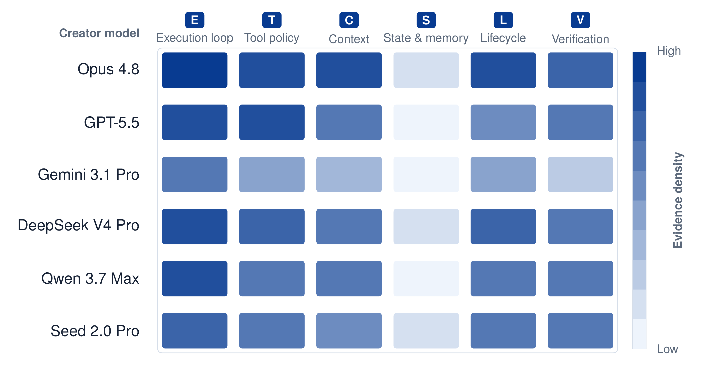

HarnessDev: Can LLMs Create and Evolve Their Own Agent Harness? (ByteDance Seed)
TL;DR
- HarnessDev (Wu, Zhang, Shi et al., ByteDance Seed + collaborators) shifts the unit of evaluation from task outputs to runnable infrastructure: the model's submitted artifact is a frozen, reusable agent harness, scored by executing it on 2,207 held-out downstream instances across code (SWE-bench Pro, Terminal-Bench 2.1), data/ML (MLE-bench), writing (EQ-Bench3), and search/research (BrowseComp).
- In Creation, six frontier creators build harnesses from a deliberately weak seed that scores 0 unmodified. Best overall is Opus 4.8 at 67.8 vs 86.2 for mature human-engineered references — far behind on code and search, but matching or beating humans on writing (84.6 vs 83.7) and ML experimentation (32.9 vs 24.0 medal rate on MLE-bench).
- In Evolution, every creator improves its harness on the visible feedback set (+1.1 to +13.9 points), but held-out gains shrink to at most +4.44 (Opus), and under a fixed non-native executor three of four lineages regress (GPT-5.5: −10.32). Self-evolved harness gains are real but unstable, and heavily entangled with which model runs the harness.
Why this matters
The recurring result of the last year — see the harness-variance study tracked today ("Stop Comparing LLM Agents Without Disclosing the Harness", 7.8× more variance from harness than from model) and JIT-Agent — is that the model-external execution layer is now a first-class capability driver. If the harness matters that much, the natural RSI question is: can the model build and improve that layer itself? That is exactly the recursive-self-improvement bottleneck: a model that can only improve within a fixed scaffold is capped by scaffold quality; a model that can improve the scaffold closes the loop.
HarnessDev is the first serious attempt I've tracked to benchmark this ability with hygiene: a common zero-scoring seed (so no credit for boilerplate), hidden evaluation tasks, frozen artifacts, a score path isolated from the harness's self-reports (SWE-Pro credit comes only from the actual repo diff; Terminal-Bench credit only from final environment state), and a post-hoc audit that found no harness gaming the scorer. It also cleanly separates creating infrastructure from evolving it under feedback — the two halves of the self-improving-harness loop that papers like Recursive Harness Self-Improvement and DarwinX usually blur together.
The core idea
Formally, a creator LLM \( L_C \) works inside a development environment \( D \) to produce a runnable harness \( H \); after freezing, an executor LLM \( L_E \) runs inside \( H \) on downstream task \( x \), and an evaluator \( J \) scores the output:
Here \( H \) bundles the execution loop, tool policy, context management, persistent state, lifecycle/recovery control, and verification — the six control modules the seed deliberately omits. The key design choice is the weak seed \( H_\mathrm{seed} \): a runnable compatibility layer that parses configs, exposes passive low-level tools, and writes audit artifacts, but has no agent loop, no tool policy, no context management, no state, no verifier, no stopping rule. Unmodified it scores 0.0 on every benchmark, so any nonzero score is attributable to execution logic the creator wrote. This avoids both extremes: an empty repo would measure CLI plumbing skills; a mature agent would give away the planning/verification structure being tested.
Two evaluation lenses disentangle harness quality from model quality: Self-Eval (\( L_E = L_C \)) measures the complete creator–harness system, while Unified-Eval runs every harness under a fixed Gemini 3.1 Pro executor, isolating the artifact.
Evolution (RQ2) starts from the creator's own frozen Creation harness \( H_0 \) and gives it downstream execution feedback from a fixed 100-task SWE-Pro set plus all 89 Terminal-Bench tasks, a budget of ten full evaluation pairs (plus cheap 5-task probes), and tracks the equally weighted pair score across frozen versions \( t \):
with generalization measured afterwards on 630 held-out SWE-Pro instances the creator never sees.
How it works
# Stage 1 — Creation (RQ1)
given: weak seed H_seed (runnable, zero-scoring), task-family spec,
tool/permission constraints, 1–3 development cases
repeat (creator agent inside Claude Code / Codex):
edit H # implement loop, tools, context, state,
# lifecycle, verification
run development cases # public tasks only
inspect logs + scores # hidden eval tasks/answers withheld
freeze H; evaluate on hidden benchmarks (avg@3 independent creations)
score under Self-Eval (L_E = L_C) and Unified-Eval (L_E = Gemini 3.1 Pro)
# Stage 2 — Evolution (RQ2, code domain)
H_0 = creator's frozen RQ1 harness
evaluate H_0 on feedback pair (SWE-Pro-100, Terminal-Bench-89)
for up to 10 charged evaluation pairs:
creator edits harness using visible feedback
(optionally ≤2 five-task probes between pairs — diagnostic only)
freeze candidate; run BOTH full feedback benchmarks
candidate enters official trajectory when both legs settle
creator declares a final non-H_0 version
afterwards: evaluate every official version on 630 held-out SWE-Pro
instances (never shown to the creator)
The compliance story deserves note: hard-coding instance-specific solutions, consulting hidden tests, or bypassing the provider-neutral LLM interface are prohibited, and the authors audited the delivered source and execution artifacts of every reported run — a null result (no harness earned score through a prohibited route).

Figure 5 from the paper: evidence density for the six control mechanisms (execution loop, tool policy, context management, state & memory, lifecycle & recovery, result verification) across creators and stages. Color shows how much of each mechanism the generated harnesses actually implement and exercise — not score.Results
Creation (Self-Eval, avg@3). Seed scores 0.0 everywhere. Opus 4.8 leads overall at 67.8 (SWE-Pro 69.3, Terminal-Bench 64.8, MLE-bench medal 32.9, EQ-Bench3 84.6, BrowseComp 52.4), vs the human-engineered reference row at 86.2 (80.0, 88.8, 24.0, 83.7, 92.2 — asterisks are external results not re-run). GPT-5.5 and Gemini 3.1 Pro land at 55.1/55.6; DeepSeek V4 Pro 45.2; Qwen 3.7 Max 44.0; Seed 2.0 Pro 22.8. The split by domain is the headline: generated harnesses are far behind on search (52.6 vs 92.2) and code, but at/above the reference on writing and MLE-bench* — plausibly because mature references in code/search embed years of accumulated engineering, while writing/ML-experimentation harnesses are younger artifacts. Notably, 77.8% of failed Data tasks were attributed to harness defects rather than executor capability.
Executor dependence. Fixing the executor to Gemini reshuffles rankings: Qwen/Seed/DeepSeek improve in several settings while Opus and GPT-5.5 prefer their own executors. One Opus code harness collapses under Gemini because it hard-coded a 120-step limit tuned to its native executor. Token costs vary ~19× on MLE-bench with no reliable cost→score relationship.
Evolution. All five self-runtime lineages improve on visible feedback (Qwen +13.9, DeepSeek +13.4, Gemini +8.8, GPT-5.5 +5.9, Opus +3.0 pair-score points), but held-out SWE-Pro-630 gains are much smaller: Opus +4.44, GPT-5.5 +3.81, DeepSeek +3.17, Gemini +2.70, Qwen +1.43. Under the fixed-Gemini runtime, only Opus improves held-out (+2.70); Qwen (−1.11), DeepSeek (−2.38) and GPT-5.5 (−10.32!) regress. Edit forensics: the median declared version changes 8 files (+476/−38 lines); of 64 official version switches, 58 touch execution/control flow, 37 tools, 17 lifecycle recovery, 16 context, only 4 state — and none adds a standalone verifier. Evolution behaves like local program search around runtime feedback, with overfitting to the feedback set and to the native executor as the dominant failure mode.
How it connects
- JIT-Agent claims per-task generated harnesses beat fixed ones; HarnessDev is the sober counter-measurement — generated harnesses still trail mature references on exactly the domains (code, search) where JIT-Agent reported wins. The difference in task granularity (per-task JIT vs frozen reusable artifact) is probably load-bearing.
- "Stop Comparing LLM Agents Without Disclosing the Harness" (tracked today): harness-induced variance dwarfs model-induced variance; HarnessDev's Self-Eval vs Unified-Eval split and the executor-transfer failures are the same phenomenon measured from the construction side.
- Meta-Harness and DarwinX: outer-loop search over harness code with execution-trace access — Evolution is essentially one lineage of that search with a strict evaluation-pair budget. HarnessDev's held-out regressions quantify the generalization gap those systems must overcome.
- openJiuwen and Harness-of-Harness (both tracked today): the optimistic siblings — runtime-adaptive and wrapper-based harness improvement reporting large gains. HarnessDev's "gains depend strongly on the executing model" result is the caveat to attach to both.
- Recursive Harness Self-Improvement and Harness–Model Co-Evolution: if harness evolution transfers poorly across executors, co-adapting model and harness jointly (rather than freezing one side) looks more principled, at the price of losing artifact portability.
Critical take
This is the harness benchmark I wanted, but three caveats temper the conclusions. First, the human-reference rows are verified public system results, not paired controls under one executor — the 86.2 vs 67.8 headline gap mixes harness quality with whatever executor/config those public systems used (the asterisks in Table 3 do a lot of work). Second, Evolution only covers the code domain and ten evaluation pairs; "gains are unstable" with a budget of ten noisy measurements per lineage may partly be measurement noise, and the creator never gets enough signal to distinguish real improvement from feedback-set variance — arguably the benchmark under-provisions the very feedback loop it wants to study. Third, the development environments are Claude Code and Codex — themselves sophisticated harnesses — so "can a model build a harness?" is really "can a model inside a mature harness build another harness?", which is the realistic setting but flatters creators whose dev-time tooling is stronger. The most durable finding, I think, is the null on verification: across 64 evolution edits, no creator built a standalone verifier — models improve loops, tools, and recovery, but don't spontaneously invent the checking machinery that human harness engineers consider load-bearing. That's a concrete, falsifiable gap for the self-improving-harness agenda.
If you remember three things
- Harness construction is now a benchmarked capability: from a zero-scoring seed, the best frontier model reaches 67.8 vs 86.2 for mature human systems — behind on code/search, ahead on writing and ML experimentation (32.9 vs 24.0 MLE-bench medal rate).
- Self-evolution of harnesses overfits: +1 to +14 points on visible feedback shrinks to ≤+4.44 held-out, and mostly reverses under a non-native executor — harness gains are entangled with the model that runs them.
- Across all 64 evolution edits, models modified loops, tools, and recovery but never added a standalone verifier — the clearest concrete gap between model-built and human-built harnesses.